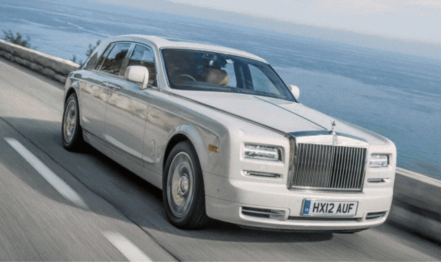

Co możemy zaoferwać?
Kim jesteśmy?
Firma samochodów Car&Ask Sp. z o.o. buduje w Polsce największą sieć wypożyczalni samochodów.Obecnie wynająć auto można w 5 miastach
Firma samochodów Car&Ask Sp. z o.o. buduje w Polsce największą sieć wypożyczalni samochodów.Obecnie wynająć auto można w 5 miastach

Wypożyczalnia samochodów Car&Ask Polska cechuje się wysoką jakością oferowanych samochodów. Wszystkie nasze pojazdy są nowe: najstarszy model ma 2 lata. Ze szczególną starannością dbamy o sprawność techniczną pojazdów, dlatego stale przeprowadzamy przeglądy techniczne w autoryzowanych serwisach.
reklama
Car&ask Polska w swojej ofercie posiada ponad 1700 nowych samochodów osobowych oraz ponad 500 samochodów dostawczych. Flota samochodów jest serwisowana u autoryzowanych dealerów. Posiadamy marki premium takie jak: BMW, Mercedes, a także bardzo duży wybór samochodów osobowych takich jak Mazda, Seat, Ford, Peugeot, Suzuki, Toyota, Volkswagen, Kia, Renault, Nissan.
Nasza flota zaopatrzona jest również w samochody specjalistyczne typy Plandeka, Kontener oraz Vany 6,7,9-osobowe.
Dla pracowników firmy Car&Ask Polska najważniejszy jest Klient, dlatego też stale wychodzimy naprzeciw oczekiwaniom naszych Klientów. Wszystko to z myślą o owocnej i długoletniej współpracy. Mamy na uwadze aktualne trendy i potrzeby. Stajemy na wysokości zadania i oferujemy najnowsze modele samochodów dające użytkownikom gwarancję bezpieczeństwa i komfortu jazdy.
Aby zapewnić jak najlepszą obsługę, zatrudniamy ponad 100 specjalistów, którzy zapewniają naszym Klientom profesjonalizm i wyjście nawet z nieoczekiwanych sytuacji. Ogólnopolska infolinia czynna 7 dni w tygodniu umożliwia Klientom stały kontakt z pracownikami firmy. Jesteśmy elastyczni zarówno pod względem zróżnicowanej floty jak i warunków wynajmów.
Gdzie nas znajdzeisz?

Kontakt
Numer tel:601602603
+48 600 222 919
e-mail:car&ask@gmail.com
Numer tel:601602603
+48 600 222 919
e-mail:car&ask@gmail.com
©Designed by Dawid Żychowski